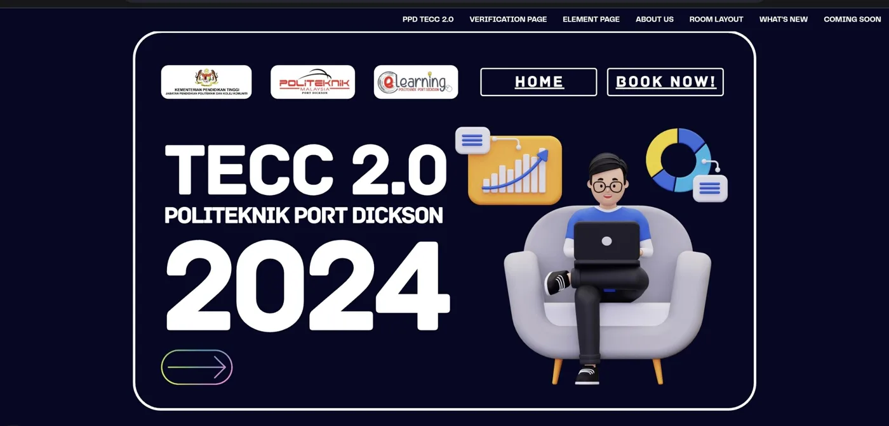
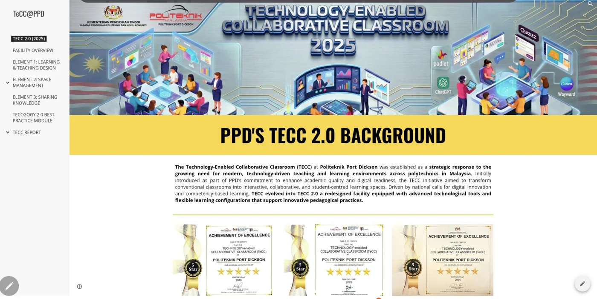

← LAMAN UTAMAPOLIPD / ARKIB / 2025
Laporan TECC
tahun 2025.
Laporan 2025 dikekalkan sebagai rujukan kesinambungan.
ARKIB / RUJUKAN 2024
Laporan dan asas pembangunan 2024
Dokumen sejarah: garis panduan, pelan ruang, tinjauan pelajar dan perancangan TECC 4.0. Akses kepada laporan asal tertakluk kepada kebenaran platform.
PRATONTON LAMAN WEB
Pratonton laporan Canva dan Google Sites
Ketik Muat pratonton untuk melihat laman asal di sini tanpa meninggalkan arkib.

Pratonton tidak muncul? Tapak ini mungkin menyekat paparan terbenam atau memerlukan log masuk. Gunakan butang Buka tab baharu.

Pratonton tidak muncul? Tapak ini mungkin menyekat paparan terbenam atau memerlukan log masuk. Gunakan butang Buka tab baharu.
ARKIB / RUJUKAN 2025
Dokumen rujukan 2025
Aktiviti 2025 yang direkodkan: Mesyuarat Unit e-Pembelajaran (6 Feb), MUET Mastery Seminar (26 Mac), MUET Speaking Test Sesi 1 (8–17 Apr), Bengkel Kickstart EDUCAST (6 Mei), Ulang Kaji DSB dan ETAC (Mei), Video Resume Assessment DUE50132 (Nov).